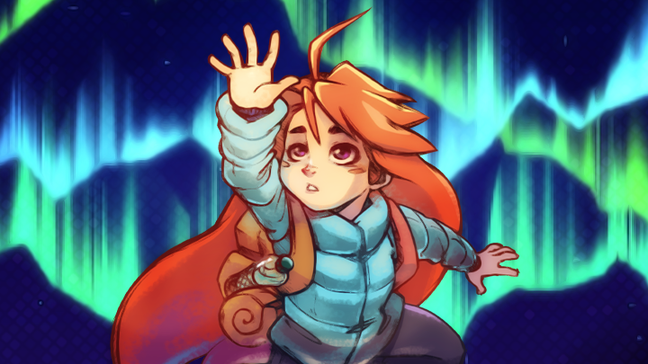
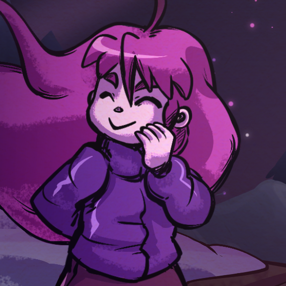
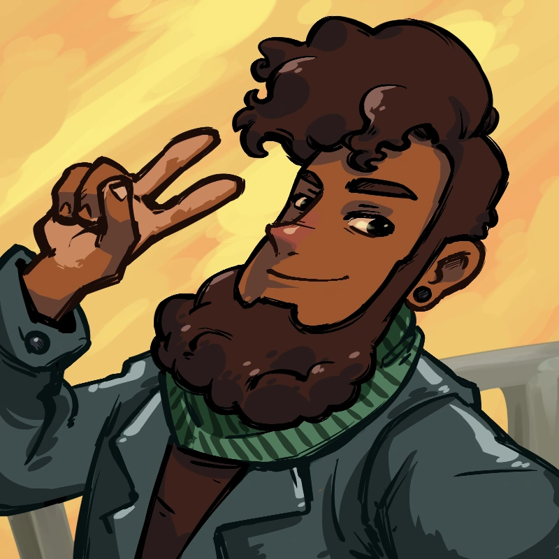

Sobre o jogo
Celeste é um jogo eletrônico de plataforma desenvolvido pelos canadenses Maddy Thorson e Noel Berry, com arte feita pelo estúdio brasileiro MiniBoss. O jogo foi originalmente criado como um protótipo de quatro dias durante uma game jam, e depois foi expandido para o seu lançamento completo. Celeste foi lançado em janeiro de 2018.
O jogo recebeu aclamação da crítica e foi premiado como "Melhor Jogo Independente" e "Jogo Mais Impactante" no The Game Awards 2018, além de ter sido indicado para "Jogo do Ano" e também o prêmio de "Melhor Trilha Sonora" nesta mesma premiação.
Personagens

Madeline
Madeline é a personagem principal de Celeste, controlada pelo jogador. Ela luta contra a ansiedade e a depressão, o que a motiva a escalar o Monte Celeste.

Badeline
Badeline é o outro eu de Madeline. Ela aparece pela primeira vez em Old Site, quebrando o espelho. Depois disso, ela tenta constantemente convencer Madeline a desistir de escalar a Montanha Celeste, chegando a fazê-la cair no início de Reflection.

Theo
Theo é outro alpinista que Madeline encontra no capítulo 1, 2 ou 3. Ele é menos sério e mais tranquilo que Madeline. Ele escala a montanha principalmente para tirar fotos para o seu perfil no Instapix. Ao longo da jornada, ele também tira algumas selfies com Madeline.
Celeste Classic
Celeste Classic é a versão original e gratuita de Celeste, criada em 2016. Foi desenvolvida para o console virtual Pico-8. O jogo pode ser encontrado no site da Pico-8 e no itch.io. O código original do jogo foi escrito em uma versão da linguagem de programação Lua adaptada para o Pico-8.
Na versão completa de Celeste, o Celeste Classic pode ser desbloqueado encontrando uma sala secreta no Lado A do Resort Celestial. Após encontrar Celeste Classic pela primeira vez, o jogo poderá ser jogado a partir do Menu Principal em futuras partidas.